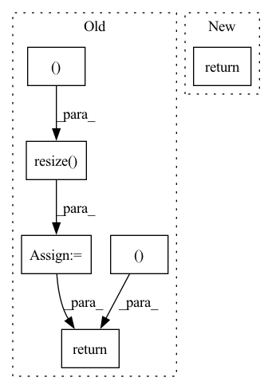

Pattern ID :33122
Before Change
height = int(img.size[1] * ratio)
img = img.resize((width, height), Image.ANTIALIAS)
elif size is not None:
img = img.resize((size, size ), Image.ANTIALIAS)
elif scale is not None:
img = img.resize( (int(img.size[0] / scale), int(img.size[1] / scale) ), Image.ANTIALIAS)
return img if return_pil else np.array(img)
def prepare_img(img_path, new_width, device):After Change
ratio = width / img.shape[0]
height = int(img.shape[1] * ratio)
img = resize(img, (width, height), anti_aliasing=True)
return img
def prepare_img(img_path, new_width, device):In pattern: SUPERPATTERN
Frequency: 3
Non-data size: 6
Instances Fragment ID: 95777092
Project Name: gordicaleksa/pytorch-neural-style-transfer
Commit Name: 6856e5796971c3fb5e77c0a798b35e6e106b5bcb
Time: 2020-03-30
Author: gordicaleksa@gmail.com
File Name: utils/utils.py
M Class Name: AnonimousClass
N Class Name: AnonimousClass
M Method Name: load_image(2)
N Method Name: load_image(5)
M Parent Class:
N Parent Class:
M File Name: utils/utils.py
N File Name: utils/utils.py
M Start Line: 12
M End Line: 22
N Start Line: 18
N End Line: 27
Before Change
img = img.resize((w,h),resample = Image.BILINEAR)
if mask is not None:
mask = mask.resize( (w,h ), resample = Image.BILINEAR)
lm = np.stack([lm[:,0] - t[0] + w0/2,lm[:,1] - t[1] + h0/2],axis = 1)/s*102
img = img.crop((left,up,right,below))
if mask is not None:
mask = mask.crop((left,up,right,below))
img = np.array(img)
if len(img.shape)==2:
img = np.expand_dims(img,-1)
img = np.repeat(img, 3, axis=-1)
else:
img = img[:,:,::-1] // Became BGR
img = np.expand_dims(img,0)
if mask is not None:
mask = np.expand_dims(mask,0)
lm = lm - np.reshape(np.array([(w/2 - 112),(h/2-112)]),[1,2])
return img, lm, mask, cropped_img, [left_c, right_c, up_c, below_c]
// resize and crop input images before sending to the R-NetAfter Change
img = np.expand_dims(img,0)
lm = lm - np.reshape(np.array([(w/2 - 112),(h/2-112)]),[1,2])
return img, lm, cropped_img, [left_c, right_c, up_c, below_c, render_size, t[0]-w0/2, h0/2-t[1]]
def Preprocess(img, lm, lm3D, render_size=224, box=False):
w0,h0 = img.size Fragment ID: 95777088
Project Name: yeongjoonju/cfr-gan
Commit Name: 6840d7a2588a39fce22c2c80665f3796945ac43c
Time: 2022-02-27
Author: yj_ju@korea.ac.kr
File Name: mmRegressor/preprocess_img.py
M Class Name: AnonimousClass
N Class Name: AnonimousClass
M Method Name: process_img(5)
N Method Name: process_img(6)
M Parent Class:
N Parent Class:
M File Name: mmRegressor/preprocess_img.py
N File Name: mmRegressor/preprocess_img.py
M Start Line: 32
M End Line: 77
N Start Line: 47
N End Line: 67
Before Change
frames = [
np.array(Image.fromarray(f).resize((width, height), Image.BILINEAR)) for f in frames
]
depths = [
np.expand_dims(np.array(
Image.fromarray(d.squeeze()).resize( (width, height ), Image.BILINEAR) ),
axis=2) for d in depths
]
masks = [
np.array(Image.fromarray(m).resize((width, height), Image.NEAREST)) for m in masks
]
return frames, depths, masks
class RandomCrop(object):After Change
masks = [
np.array(Image.fromarray(m).resize((width, height), Image.NEAREST)) for m in masks
]
return frames, masks
class RandomCrop(object):
def __init__(self, parameters): Fragment ID: 95777086
Project Name: hzxie/rmnet
Commit Name: c99a3706dcb655d4af3d0fb94a6f15296a5d3285
Time: 2020-05-12
Author: root@haozhexie.com
File Name: utils/data_transforms.py
M Class Name: Resize
N Class Name: Resize
M Method Name: __call__(3)
N Method Name: __call__(4)
M Parent Class: object
N Parent Class: object
M File Name: utils/data_transforms.py
N File Name: utils/data_transforms.py
M Start Line: 134
M End Line: 158
N Start Line: 142
N End Line: 148